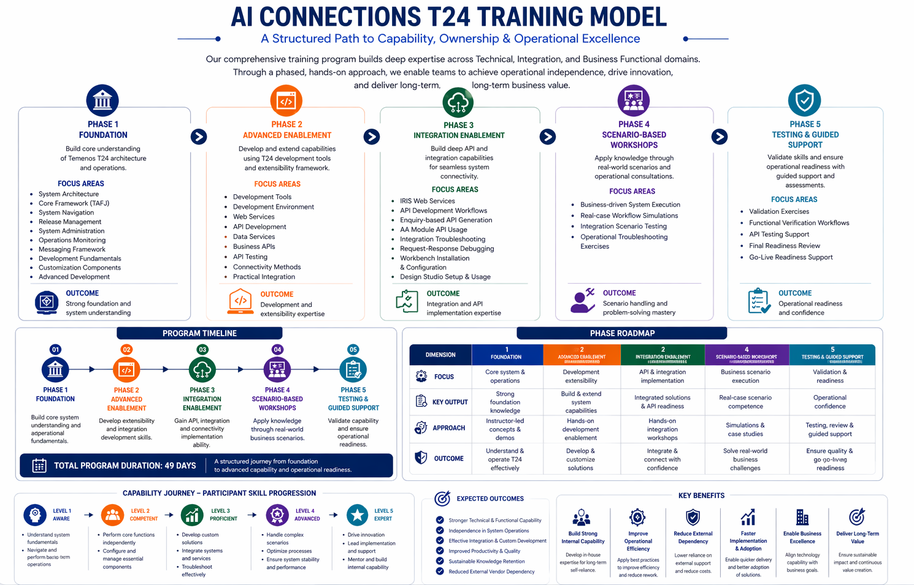

A Structured Path to Capability, Ownership & Operational Excellence
AI Connections provides a structured Temenos T24 R25 capability-building program that enables organizations to establish strong internal ownership of their core banking platform, accelerate API-driven innovation, and minimize reliance on external vendors.
Delivered through a phased, hands-on methodology, the program builds deep technical, functional, and integration expertise aligned with real operational environments. It combines architecture-level knowledge, development enablement, integration capability, and functional mastery to support sustainable operations and long-term independence.
The engagement includes structured workshops, certification readiness support, and post-training validation to ensure measurable outcomes and lasting capability development.

Structured learning approach covering technical, integration, and functional domains across multiple phases.
Real-world scenario-based exercises designed to build operational confidence and independent execution capability.
Guided preparation programs aligned with Temenos certification standards and operational validation.